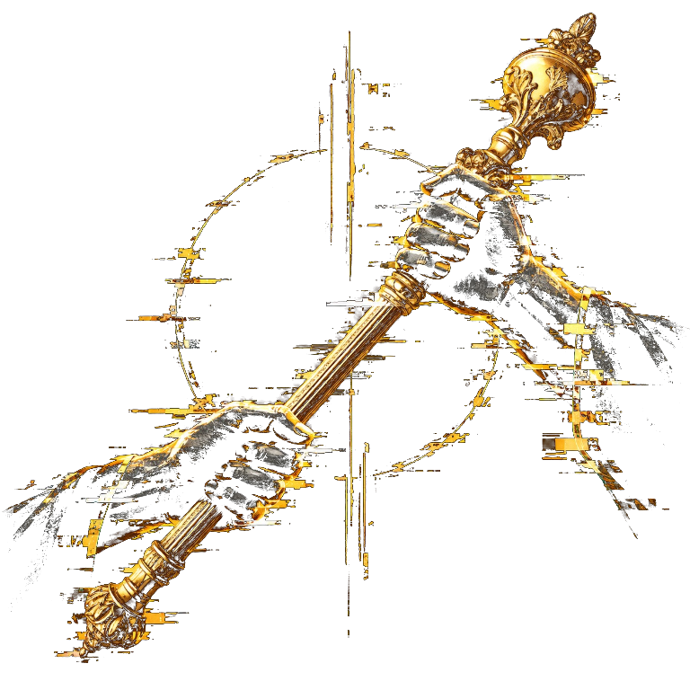
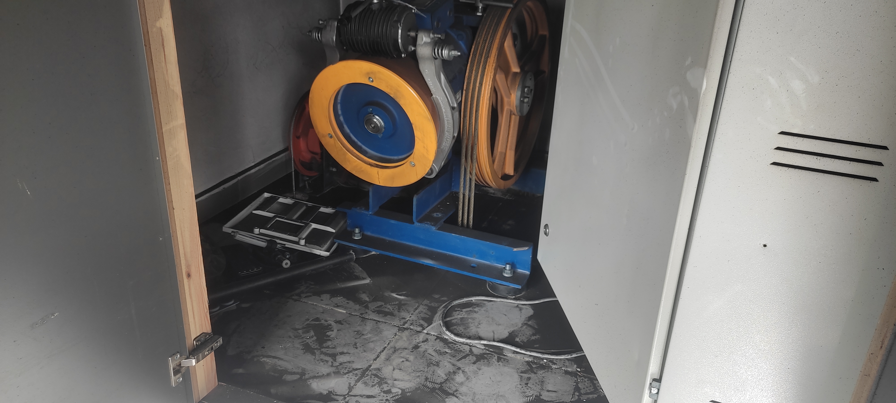
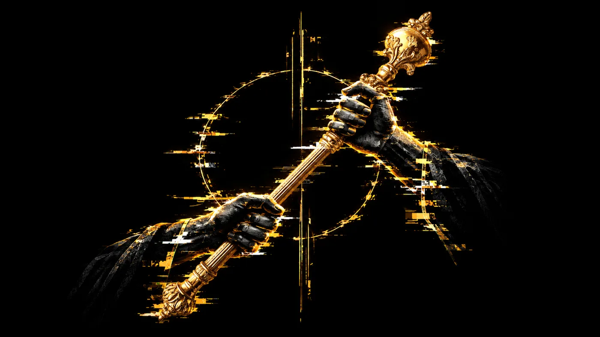
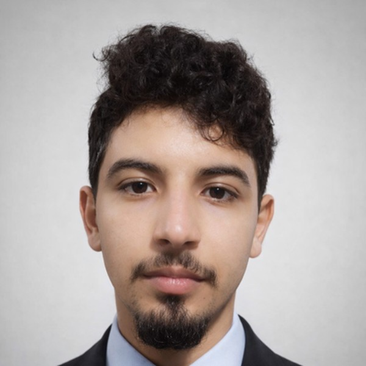

Schémas électriques
Lecture et interprétation des schémas de puissance et de commande.

Technicien en Électricité Industrielle
Électricité industrielle · Maintenance · Ascenseurs · Photovoltaïque



Actuellement en formation en Génie Électrique, option Électromécanique des Systèmes Automatisés. Expérience pratique en maintenance des ascenseurs, câblage électrique et installations photovoltaïques. Rigoureux, autonome et doté d’un esprit d’analyse, je souhaite contribuer à des projets industriels.
Un portfolio orienté terrain, technique et projets.
Mon parcours comprend des expériences en raccordement et installation d’armoires électriques, infrastructure de boutons d’appel, diagnostic de pannes d’ascenseurs et installation photovoltaïque.
Qualités personnelles : esprit d’équipe, rigueur et sens des responsabilités, autonomie et capacité d’adaptation, esprit d’analyse et résolution de problèmes.
Lecture et interprétation des schémas de puissance et de commande.
Câblage et raccordement d’armoires électriques.
Pose, câblage et maintenance d’équipements solaires photovoltaïques.
Installation, raccordement, diagnostic et tests de sécurité.
Contribution au diagnostic et au dépannage des installations électriques d’ascenseurs.
Respect des normes de sécurité électrique.
Automatisme industriel et systèmes de commande, en formation.
De la formation aux stages : ce que j’ai appris, installé et mis en service.
Raccordement d’armoires, boutons d’appel, diagnostic de pannes et tests de sécurité.
Pose et câblage de panneaux, mise en service de pompes solaires en sécurité.
Lecture de schémas, câblage d’armoires, puissance et commande.
CFMMER Rabat · Formation en cours
CFMMER Rabat · Diplôme TEI
Programme d’innovation entrepreneuriale : De l’idée au projet viable · CFMMER
Documents officiels (OFPPT et attestations d'entreprise). Numéros de CIN, matricule et date de naissance masqués pour la confidentialité — versions complètes disponibles sur demande.
Électricité Industrielle — CFMMER, Rabat
Voir le PDFInnovation entrepreneuriale : de l'idée au projet viable
Voir le PDFExamens de fin de formation — Électricité Industrielle
Voir le PDFStage en installation photovoltaïque
Voir le PDFStage en installation et diagnostic d'ascenseurs
Voir le PDFEspace réservé à mes futures simulations de circuits électriques, automatismes, pneumatiques et hydrauliques. Les schémas, captures et résultats seront publiés progressivement selon mon temps disponible. Aucun projet non réalisé n’est présenté comme terminé.
Espace pour les schémas et simulations avec CADe SIMU ou Proteus.
Espace pour les exercices de programmation et simulation avec TIA Portal.
Espace pour les simulations de circuits hydrauliques avec FluidSIM.
Espace pour les simulations de circuits pneumatiques avec FluidSIM.
Technicien en Électricité Industrielle
EN FORMATION Génie Électrique — Option Électromécanique des Systèmes Automatisés · CFMMER 2026–2027
Technicien diplômé en Électricité Industrielle, actuellement en formation en Génie Électrique, option Électromécanique des Systèmes Automatisés. Fort de plusieurs expériences pratiques dans les domaines de la maintenance des ascenseurs, du câblage électrique et des installations photovoltaïques. Rigoureux, autonome et doté d’un esprit d’analyse, je souhaite approfondir mes compétences techniques et contribuer activement à des projets industriels.
Pour une opportunité, un stage ou une collaboration technique.
✉ mouad.erraki.tech@gmail.com☎ +212 688149929📍 Salé, Maroc